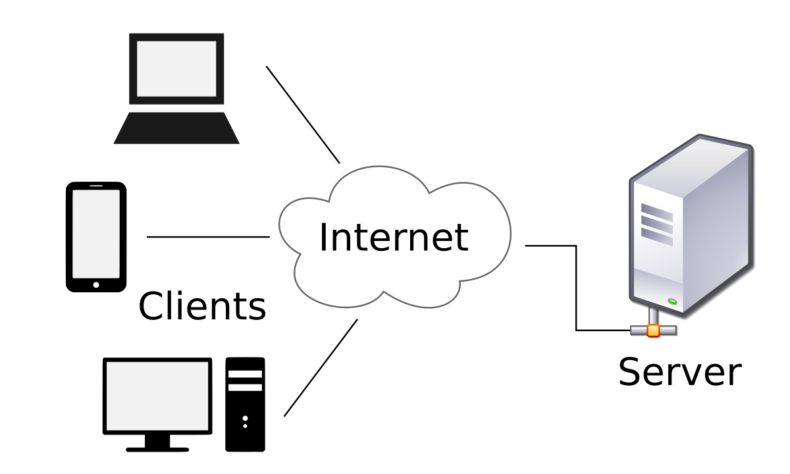
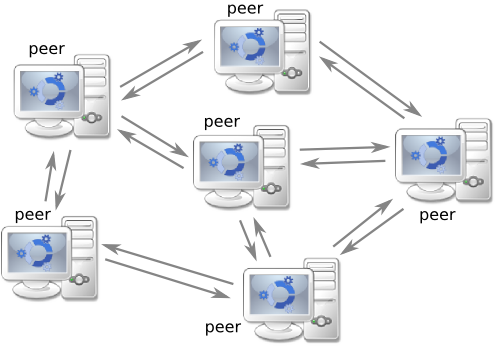

Quais são os tipos de arquitetura de rede de computadores?
O design da rede de computadores se enquadra em duas grandes categorias:
1. Arquitetura cliente-servidor
Nesse tipo de rede de computadores, os nós podem ser servidores ou clientes. Os nós do servidor fornecem recursos como memória, capacidade de processamento ou dados aos nós clientes. Os nós do servidor também podem gerenciar o comportamento do nó cliente. Os clientes podem se comunicar uns com os outros, mas não compartilham recursos. Por exemplo, alguns dispositivos de computador em redes empresariais armazenam dados e definições de configuração. Esses dispositivos são os servidores na rede. Os clientes podem acessar esses dados fazendo uma solicitação à máquina do servidor.

2. Arquitetura ponto a ponto
Na arquitetura ponto a ponto (P2P), os computadores conectados têm capacidades e privilégios iguais. Não existe um servidor central para coordenação. Cada dispositivo na rede de computadores pode atuar como cliente ou servidor. Cada ponto pode compartilhar alguns de seus recursos, como memória e capacidade de processamento, com toda a rede de computadores. Por exemplo, algumas empresas usam a arquitetura P2P para hospedar aplicações que consomem memória, como renderização gráfica 3D, em vários dispositivos digitais.
